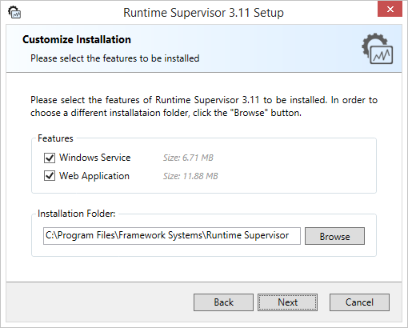

Installation
Die Systemvoraussetzung für den Runtime Supervisor befinden sich hier.
Vorbereiten einer Datenbank
Microsoft SQL Server
Wenn Microsoft SQL Server verwendet wird, muss nicht zwingend eine Datenbank vor der eigentlichen Installation durch den Setup Wizard erstellt werden. Der Setup Wizard überprüft selbst, ob die angegebene Datenbank schon existiert und ob der angegebene Benutzer die nötigen Rechte besitzt, die Datenbank und das Datenbankschema zu erstellen.
Oracle
Wenn Oracle verwendet werden soll, muss auf dem Datenbankserver ein entsprechender User angelegt sein, der dann im Setup Wizard angegeben werden kann.
Setup Wizard
Die Installation des Runtime Supervisor erfolgt über einen Setup Wizard, in dem alle für die Einrichtung nötigen Daten vom Benutzer abgefragt werden. Nachfolgend werden alle Schritte des Wizards beschrieben.
Start

Nach dem Start wird eine Übersicht über die vom Runtime Supervisor benötigten Programme angezeigt. Die Installation kann nur dann durchgeführt werden, wenn alle Voraussetzungen erfüllt sind.
Wenn ein Programm aus der Liste noch nicht installiert sein sollte, wird “Not Installed” in rot angezeigt. Die Installation des Oracle ODP.NET Client ist optional. Ist dieser nicht installiert, wird “Not Installed” in orange angezeigt.
Über den Button „Refresh“ kann die Anzeige aktualisiert werden, falls eines der fehlenden Programme installiert wurde, während der Setup Wizard schon geöffnet war.
Lizenzvereinbarung

Die allgemeinen Lizenzbedingungen müssen vor der Installation akzeptiert werden. Dazu muss die Checkbox aktiviert werden. Danach kann der Wizard fortgesetzt werden.
Auswahl der Features

Über die Baumstruktur kann definiert werden, welche Komponenten des Runtime Supervisor installiert werden sollen.
Note
Es muss mindestens eine Komponente ausgewählt werden, damit der Wizard fortgesetzt werden kann!
Das Installationsverzeichnis kann über den Button „Browse“ oder durch manuelle Eingabe geändert werden.
Auswahl des Datenbank-Providers

In diesem Schritt wird festgelegt, mit welchem Datenbank-Anbieter der Runtime Supervisor arbeiten soll. Es besteht die Auswahl zwischen Microsoft SQL Server und Oracle. Sollte der optionale Oracle ODP.NET Client nicht installiert sein, kann nur “SQL Server” ausgewählt werden.
Note
Die Auswahl des Datenbank-Anbieters ist dauerhaft und kann nicht bei einem Update auf zukünftige Versionen des Runtime Supervisor geändert werden!
SQL Server Datenbankverbindung

Dieser Schritt wird nur angezeigt, wenn im vorherigen Schritt als Datenbank-Anbieter “SQL Server” ausgewählt wurde. Über diesen Dialog wird die Datenbankverbindung definiert, mit der der Runtime Supervisor arbeiten soll.
Server:
Servername oder IP des Zielservers.
Database:
Name der SQL-Datenbank, die der Runtime Supervisor verwenden/anlegen soll.
Username:
SQL-Benutzer, der verwendet werden soll (Windows Authentifizierung wird derzeit nicht unterstützt). Der User muss ausreichend Rechte besitzen, um das Datenbankschema ändern zu können (Tabellen anlagen etc.) und ggf. Rechte besitzen, um eine Datenbank anlegen zu können, sollte sie noch nicht existieren.
Password:
Das Passwort des angegebenen SQL-Benutzers.
Über den Button “Test Connection” können die Angaben überprüft werden. Ist die Verbindung zum Server erfolgreich, wird zusätzlich angezeigt, ob die angegebene Datenbank schon existiert oder nicht.
Note
Es muss keine existierende Datenbank angegeben werden. Wird eine Datenbank angegeben, die noch nicht existiert, wird diese während der Installation automatisch erstellt.
Oracle Datenbankverbindung

Dieser Schritt wird nur angezeigt, wenn im vorherigen Schritt als Datenbank-Anbieter “Oracle” ausgewählt wurde. Über diesen Dialog wird die Datenbankverbindung definiert, mit der der Runtime Supervisor arbeiten soll.
Server:
Servername oder IP des Zielservers.
Database:
Name der Oracle-Datenbank-Instanz auf dem Zielserver, die der Runtime Supervisor verwenden soll.
Username:
Oracle-Benutzer, der verwendet werden soll. Der User muss ausreichend Rechte besitzen, um das Datenbankschema ändern zu können (Tabellen anlegen etc.).
Password:
Das Passwort des angegebenen Oracle-Benutzers.
Über den Button “Test Connection” können die Angaben überprüft werden. Ist die Verbindung zum Server erfolgreich, wird zusätzlich angezeigt, ob die angegebene Datenbank schon existiert oder nicht.
Einstellungen des Windows Service

Der Windows Service kommuniziert mit den Observables über den Port, der in diesem Schritt definiert wird. Der Standard-Port ist 10000. Es muss ein Port zwischen 1024 und 65535 definiert werden.
Über den Button “Test Port” kann geprüft werden, ob der definierte Port noch frei ist und nicht von einer anderen Anwendung bereits genutzt wird.
Einstellungen der Web Application

Die Web Application wird als Anwendung im IIS ausgeführt. In diesem Schritt wird festgelegt, wo die Anwendung im IIS platziert werden soll.
Name:
Name der Web Application im IIS.
Web Site:
Die IIS Website, unter der die Anwendung installiert werden soll.
Port:
Sollten der ausgewählten IIS Website mehrere Ports zugewiesen sein, kann über die Combobox der gewünschte ausgewählt werden, unter dem die Web Application ausgeführt werden soll.
Application Pool:
Der IIS Application Pool, in dem die Anwendung ausgeführt werden soll.
Note
Es werden nur Application Pools angezeigt, die mit der .NET Runtime Version 4 laufen und vom Typ “Integriert” sind.
Wird während der Installation eine Website oder ein Application Pool angelegt, muss der Setup Wizard neu gestartet werden, um die Anzeige zu aktualisieren (Einschränkung des MSI-Installers).
Refresh:
Über den Button „Refresh“ kann die Anzeige aktualisiert werden, sollte z.B. ein Application Pool angelegt worden sein während der Setup Wizard geöffnet ist.
Festlegen des Web Application Logins

In diesem Schritt wird der User für die Anmeldung an der Web Application im Browser festgelegt.
Username:
Name des Benutzers
Password:
Passwort des Benutzers
Das Passwort muss zwischen 8 und 30 Zeichen lang sein. Es kann später in der Web Application bei Bedarf geändert werden.
Bereit zur Installation

Sind alle Daten in den vorherigen Schritten definiert worden, kann über den Button “Install” die eigentliche Installation des Runtime Supervisor gestartet werden. Wird der Setup Wizard an dieser Stelle abgebrochen, bleibt das System unverändert.
Installationsvorgang

Während der Installation wird der gerade ausgeführte Schritt über der Progressbar angezeigt. Die Installation kann jederzeit über den Button “Cancel” abgebrochen werden.
Note
Wurde vor dem Zeitpunkt des Abbruchs der Installation schon eine Datenbank vom Setup Wizard angelegt, wird diese bei einem Abbruch nicht gelöscht!
Abschluss

Nachdem alle Komponenten des Runtime Supervisor installiert wurden, erscheint der oben gezeigte Dialog. Der Runtime Supervisor ist nun betriebsbereit. Der Setup Wizard kann über den Button “Finish” beendet werden.
Überprüfung der Installation
Diese Überprüfungen sind optional. Um zu überprüfen, ob alle Komponenten des Runtime Supervisor korrekt arbeiten, können nachfolgende Schritte unternommen werden:
Startmenü

Nach einer erfolgreichen Installation werden im Startmenü (ab Windows 8/8.1 und Windows Server 2012 in der App-Ansicht) zwei Einträge erstellt. Einer für den Windows Service und einer für die Web Application.
Windows Service
Über den Task-Manager kann festgestellt werden, ob der Runtime Supervisor Windows Service korrekt ausgeführt wird.

Der Windows Service trägt den Namen “RSService” und sollte den Status “Wird ausgeführt” haben.
Wird im Windows Startmenü auf den Eintrag “Windows Service” geklickt, sollte sich der Standard-Browser öffnen und folgendes Bild anzeigen:

Dies bedeutet, dass der OWIN Web Service innerhalb des Windows Service korrekt hochgefahren wurde und nun bereit zur Kommunikation mit den Observables ist.
Web Application
Um zu überprüfen, ob die Web Application im IIS korrekt installiert wurde, kann im Startmenü auf den Eintrag “Web Application” geklickt werden. Danach öffnet sich der Standard-Browser und die Login-Seite der Runtime Supervisor Web Application sollte angezeigt werden.

Sie können sich hier mit dem im Setup Wizard definierten Web Application Benutzer anmelden.
Ändern der Installation
Ist der Runtime Supervisor erfolgreich auf einem Rechner installiert, kann diese Installation durch erneutes Starten des Installers geändert werden. Ist bei einer Installation z.B. nur der Windows Service installiert worden und soll nun nachgelagert noch die Web Application auf demselben Rechner installiert werden, können Sie dies jederzeit tun.

Nach dem erneuten Start des Setup Wizard wird der oben dargestellte Dialog angezeigt.
Change Installation:
Wenn Komponenten einer Runtime Supervisor Installation hinzugefügt oder deinstalliert werden sollen, klicken Sie auf den Button “Change”. Anschließend wird der Setup Wizard wie bei einer Neuinstallation fortgeführt und es kann neu definiert werden, was auf dem Rechner installiert sein soll.
Uninstall:
Der Runtime Supervisor wird mit all seinen Komponenten und Einstellungen vom Rechner entfernt.
Note
Bei einer Deinstallation des Runtime Supervisor werden unter keinen Umständen Datenbanken gelöscht oder geändert! Diese müssen durch den Benutzer manuell entfernt werden!
Troubleshooting
Es kann durch verschiedenste Bedingungen (Zugriffsrechte, Inkompatibilitäten, Systemauslastung, usw.) dazu kommen, dass der Setup Wizard mit einem Fehler abbricht. In so einem Fall kann der Installer in einem erweiterten Modus gestartet werden, um während der Installation eine Logdatei zu erzeugen. Diese ist essenziell, wenn Sie sich auf Grund des Fehlers im Installer mit unserem Support in Verbindung setzen.
Um die Aktionen des Installers in einer Logdatei zu dokumentieren, muss dieser wie folgt per Windows-Eingabeaufforderung gestartet werden:
RS_Install_x64.exe -l „[Pfad und Dateiname der Logdatei]“
Beispiel:
RS_Install_x64.exe -l „C:\Windows\Temp\RS_Installer_Log.txt“
Führen Sie den Installer ganz normal aus und lassen Sie ihn wieder auf den Fehler laufen. Dieser wird dann mit in die Logdatei aufgenommen und kann von unserer Entwicklungsabteilung analysiert werden.